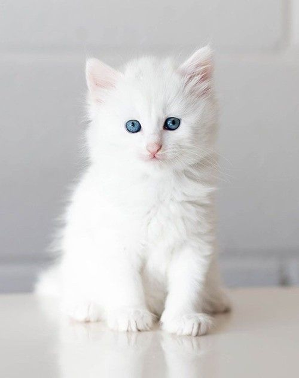

Меня зовут Азарова Дарья Михайловна и я начинающий специалист по веб-разработке.

Фронтенд
Фронтенд (или клиентская часть) - это то, что видит пользователь.
Он включает в себя все визуальные элементы веб-сайта или приложения: кнопки, формы,
изображения и текст. Фронтенд разработчики используют языки разметки и стилизации,
такие как HTML, CSS и JavaScript, чтобы создавать интерактивные и привлекательные интерфейсы.
Основная задача фронтенда - обеспечить удобство использования и эстетическую привлекательность.
Бэкенд
Бэкенд (или серверная часть) - это "за кулисами" веб-приложения. Он отвечает за обработку данных,
управление пользователями и взаимодействие с базами данных. Бэкенд разработчики используют языки
программирования, такие как Python, Ruby, Java или PHP, а также фреймворки и базы данных для создания
логики приложения. Основная задача бэкенда - обеспечить стабильную работу приложения и безопасность
данных.